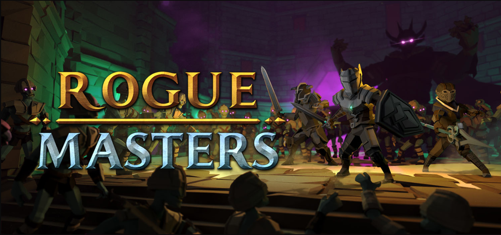
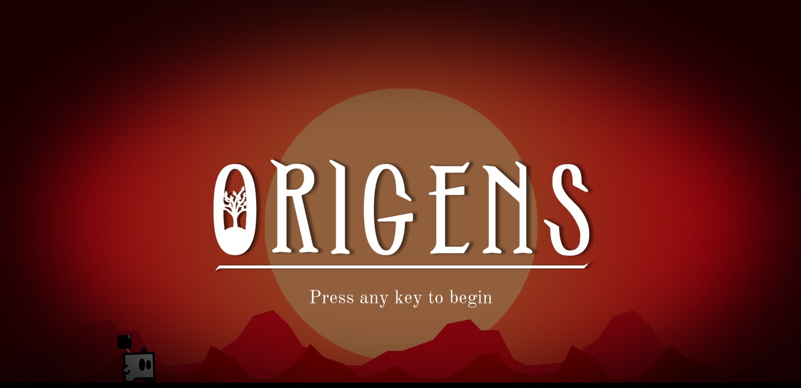
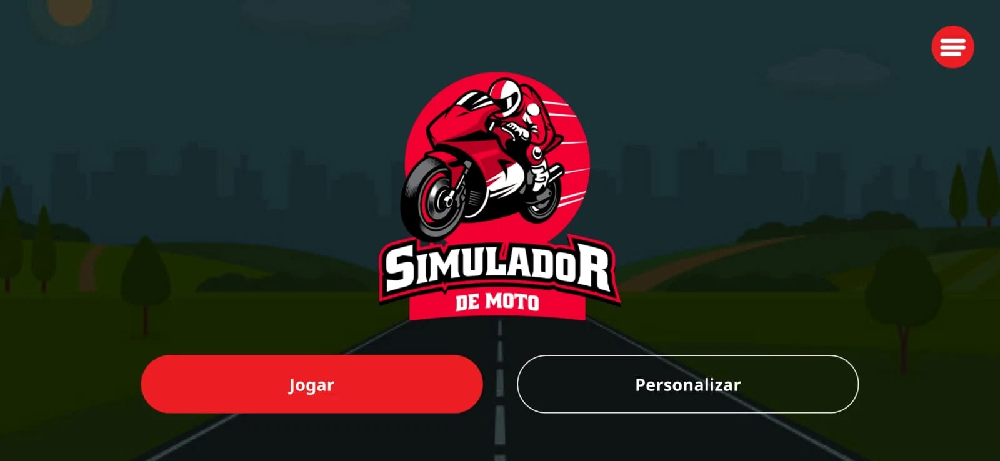
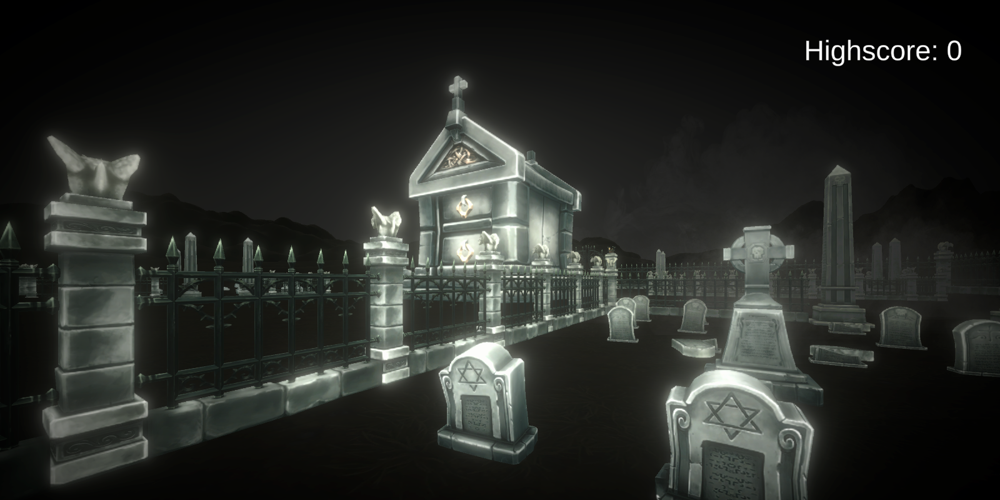
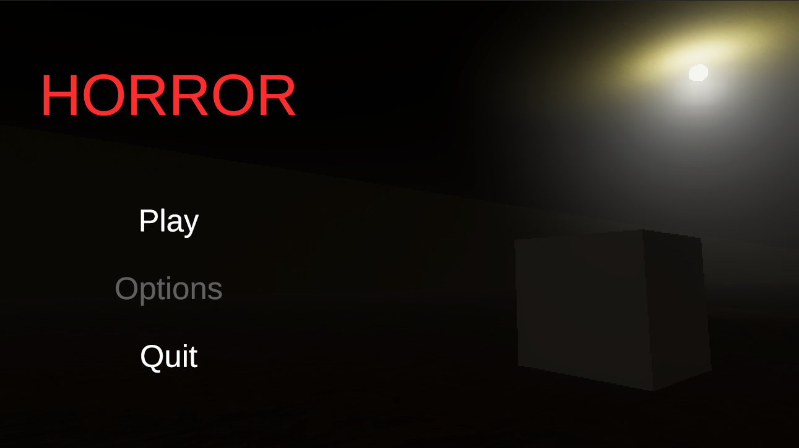

I'm a full-time game developer, passionate about technology and a huge lover of creating fun things.
I'm a Brazilian game developer passionate about development and a big tech lover.
I've been working as a professional developer for over 2 years using the Unity3D graphics engine and the C# programming language.
Check out the main projects I've worked on:

Rogue Masters
Rogue Masters is a 6 player co-op horde survival game with souls-like combat and extensive character customization where you fight Entropy
in long-lost civilizations.

Origens
Origens is a 2D side-scrolling game where the main character travels through a newly created world that geologically evolves through the ages.
The player switches between two characters, but can only control one at a time.
The characters have different powers and the player must combine them to be able to overcome challenges and finish the game.
in long-lost civilizations.

Moto Simulador
Play and have fun with the most realistic motorcycle simulator and accelerator! Choose your bike, your engine and the track and accelerate using the handle or
turning your phone like a real motorcycle!

Arrow is Cool in the Cemetery Skull
You are in a graveyard and you have to shoot arrows at skeletons to survive as long as possible.

Horror
Horror is a 4 player online co-op horror game. Your objective is to investigate a haunted house and exorcism the ghost that haunts it.